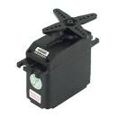
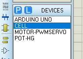
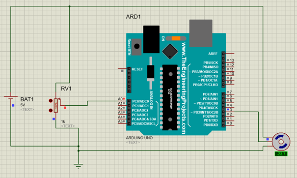

 |
Maîtriser la commande des positions. |
Cette ressource va permettre de maîtriser la commande des positions données par un servomoteur, et donc, d'une position donnée.
Vous pourrez visualiser deux vidéos:
- Comment utiliser un servomoteur cliquer ici:
- Potentiomètre et acquisition analogique cliquer ici:
On va simuler le montage suivant afin d'expérimenter et comprendre le programme.
En utilisant les composants suivants:

On saisit le schéma:

Programme à tester:
/* Controle d'un servo moteur à partir d'un potentiomètre */ #include <Servo.h> Servo myservo; // création de l’objet int potpin = 0; // broche analogique potentiomètre int val; // variable pour lire la valeur analogique void setup() { myservo.attach(3); // broche sur laquelle le servo est branché } void loop() { val = analogRead(potpin); // Lecture des valeurs du potentiomètre entre 0 et 1023 val = map(val, 0, 1023, 0, 180); // convertir les valeurs 0-1023 en 0-180 myservo.write(val); // écriture de la valeur dans le servo delay(15); // temps d'attente } |
Pistes de réflexions:
Pourquoi avoir utilisé une entrée analogique pour le potentiomètre?
Qu'est-ce qu'un servomoteur?
A quoi correspondent les valeurs "0 à 1023"?
En quoi consiste l'instruction " val = map(val, 0, 1023, 0, 180);"
Tester le montage avec la valeur 90 à la place de 180
ESSAI
- Faire les essais avec une carte Arduino, un servomoteur équipé d'un palonnier pour vérifier l'angle de rotation et un potentiomètre.
Respecter les numéros d'entrées et sorties
(ne pas utiliser la maquette)
- Valider le fonctionnement
Créé avec HelpNDoc Personal Edition: Générateur gratuit de livres électroniques et documentation